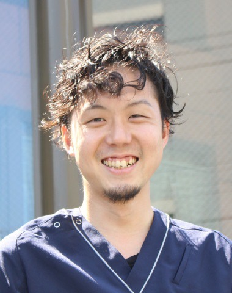

自律神経の不調を五行で読み解く座学と、
臨床で活きるお灸の実技

成竹鍼灸整骨院グループ プロダクト責任者の鍼灸師・植田 祐司です。
彼は古典を守ることを大切にしていて、臨床現場で多くの自律神経症状の患者と向き合い、五行分類と現代医学を結び合わせた見立てを実践しています。
教科書だけでは伝えきれない「現場で活きる選穴の根拠」と、お灸の据え方の基本を、丁寧に紐解いていきます。
自律神経の乱れは、現代の臨床で日々向き合う主訴のひとつ。
不眠・動悸・倦怠感・冷えのぼせ——その背景にあるバランスの崩れを、どう見立てるか。
今回の勉強会では、五行分類による自律神経のタイプ別の見立てと、それぞれの背景にある現代医学的な解釈をわかりやすく解説。
さらに実技パートでは、お灸の据え方を講師のデモと実践を通じて体験できます。
教科書だけでは学べない、現場の臨床家の視点と技術を、成竹グループから直接お伝えする勉強会です。
「なぜ怒りっぽい人は肝を病みやすいのか」「不眠は心の問題か、それとも腎の問題か」——自律神経というひとつの主訴も、肝鬱・心火・脾虚・肺虚・腎虚…と五行で分けると見立てが立体的になります。
古典の枠組みを現代の言葉で結び直すと、臨床での判断力と患者さんへの説明力が格段に変わります。
五行は単なる分類ではなく、関係性のモデル。それぞれの臓腑が持つ性質と、自律神経の交感・副交感の働きを重ね合わせると、症状の背景が立体的に見えてきます。
当日は各タイプの典型像と、現代医学的なメカニズム、そして選穴の根拠を整理してお伝えします。
本会は先着順で受付しております。
ご検討中の方はお早めにお申し込みください。
Googleフォームよりお申し込みください
※ フォーム回答をもって受付完了となります